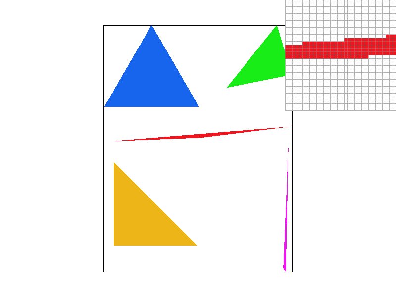
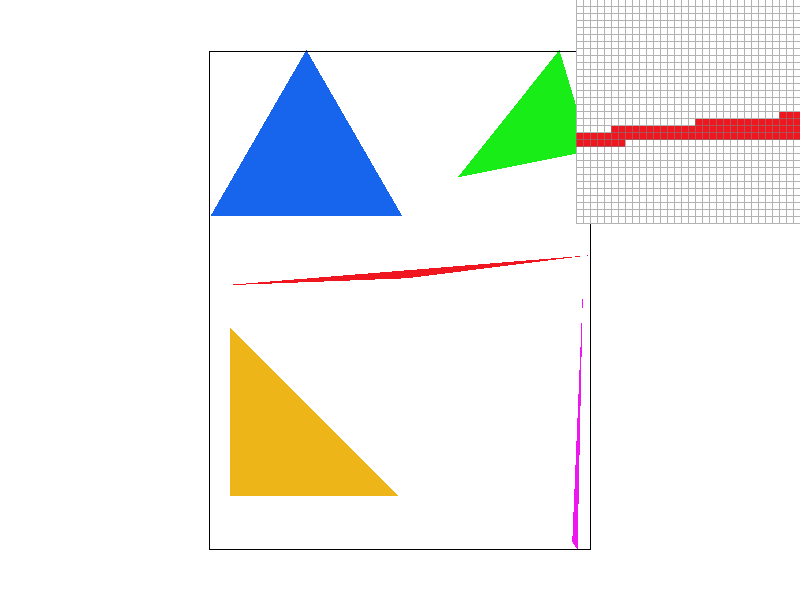
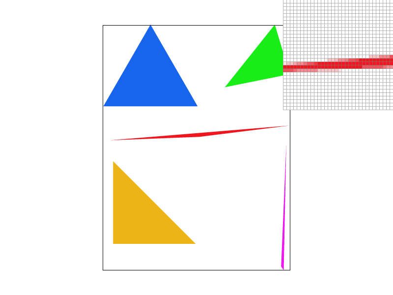

In this project, I implemented a rasterizer which supports basic rasterizaing operations as well as texture mapping. i have learnt the lower level working details of rasterizaing and texture mapping.
1:I first find the bounding box of the triangle. Then I iterate over all the pixels inside the bounding box and check whether the point is inside
the triangle according to the formula described in the lecture(if all 3 line equations return negative/positive at the same time then it is
inside the triangle). Then I call fill_pixel() on that pixel.
2: As described above.
3:

1:First I changed the sample_buffer so that it contains width*height*sample_rate elements, Then in rasterize_triangle(),I just evalute each "sub-pixel",
if the sub-pixel is inside the triangle, then I just record the color in the sample_buffer. Then, in resolve_to_framebuffer(), I calculate the
average color of sub-pixels inside a real pixel. I also update fill_pixel so that the function modify sample_rate number of elements in sample_buffer
on one call. Supersampling is useful for antialiasing because it rasterize the averge color on the edge of the triangle.
2: When sample rate increase, more "sub-pixels" are taken into account, which makes the edge smoother.

